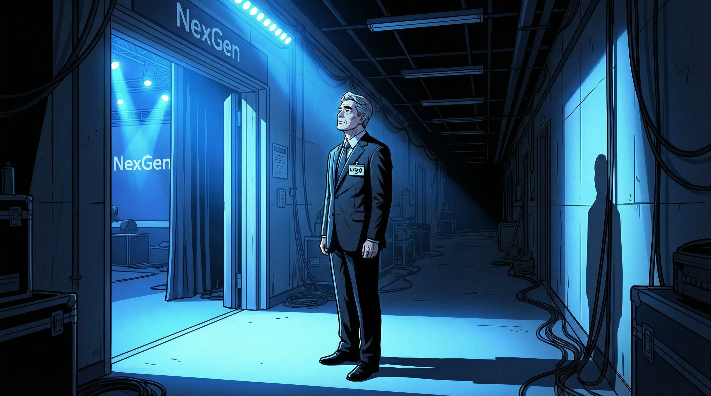
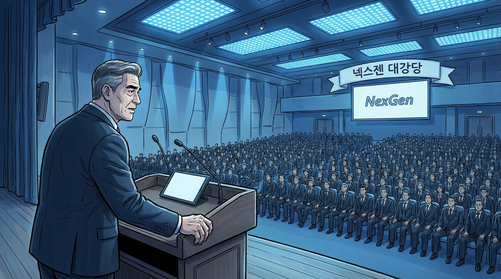
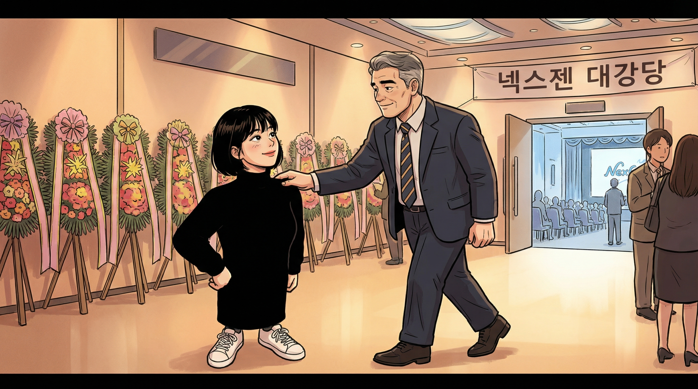
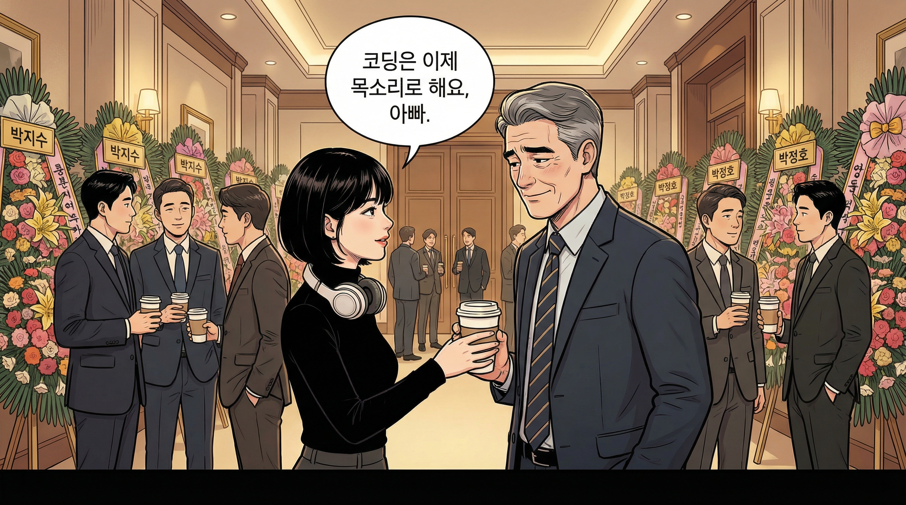
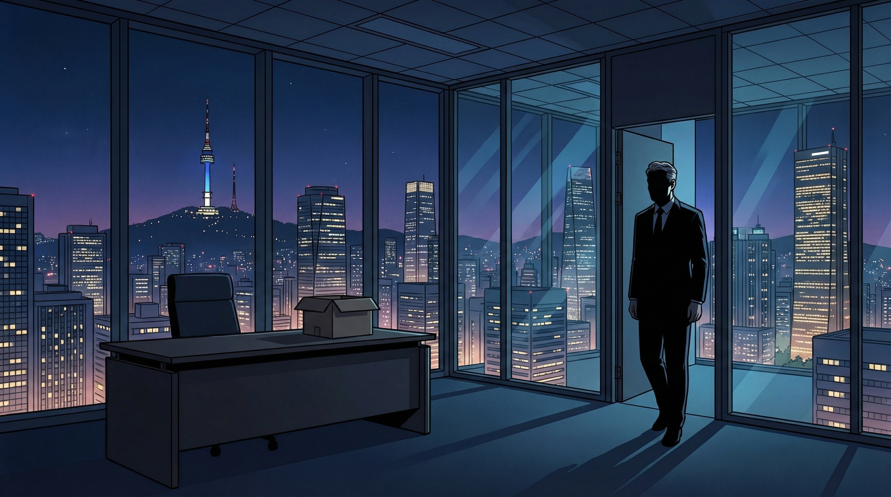
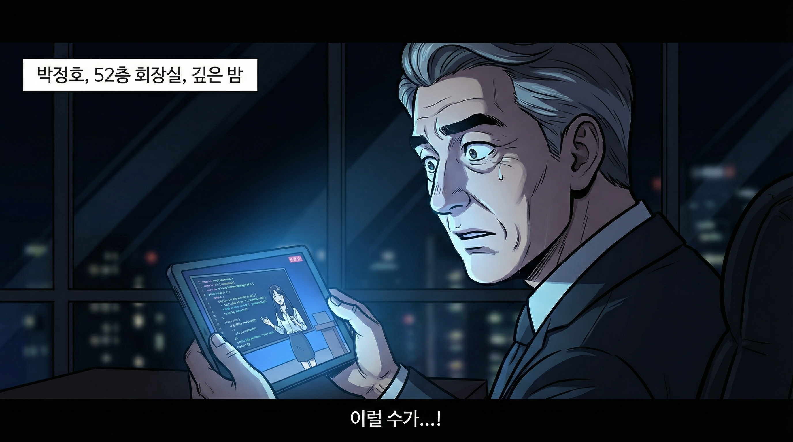
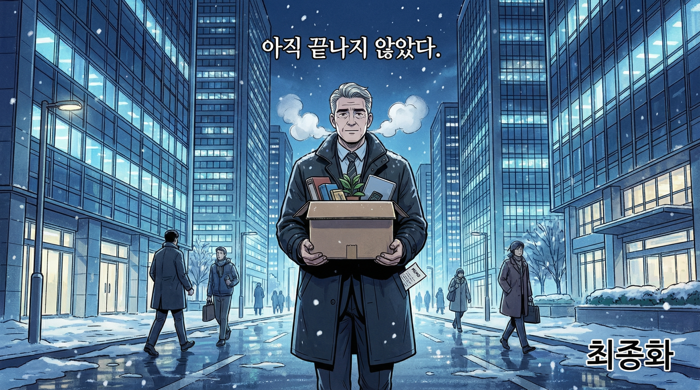

마이크가 울림을 잡았다. 대강당 천장의 LED 패널이 넥스젠 블루로 물들면서, 이천 석 좌석 위로 차가운 빛이 쏟아졌다.
서른 해. 반도체 회의실의 형광등 아래서 시작해 이 무대까지, 서른 해가 걸렸다.

"솔직한 이야기를 하겠습니다."
"기술은 결국 사람을 향해야 합니다. 그걸 잊으면, 아무리 좋은 기술도 의미가 없습니다. 제가 서른 해 동안 배운 건, 결국 그겁니다."
다시 박수가 터졌다. 이번에는 조금 길었다. 하지만 정호의 귀에는 같은 소리였다.
의례적이고, 적당하고, 곧 사라질 소리.

"아빠, 연설 잘했어."

"코딩은 이제 말로 하는 시대야, 아빠."
코딩은 말로 하는 시대. 그 시대에, 나는 뭐가 되는 건가.

38층 CTO 집무실. 이미 짐은 대부분 옮긴 뒤였다.
불을 켜지 않았다. 바깥 여의도의 불빛이 유리벽을 통해 들어오고 있었다.

이건 코딩이 아니다. 정호가 알던 코딩은 엔지니어가 에디터 앞에 앉아 한 줄 한 줄 논리를 쌓아가는 일이었다. 그 모든 게, 이 영상 속에서는 한 사람과 AI의 대화로 치환되어 있었다.
정호의 왼쪽 눈 밑이 미세하게 떨렸다.

서른 해가 끝났다. 손에는 상자 하나와 메모지 한 장이 남았다.
어디로 가는지는 정하지 않았다. 다만, 한 가지는 알고 있었다.
아직 끝나지 않았다.